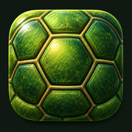

TURTLE CLUB
BEDROCK COMPANION
Plan • Track • Build • ExploreGod Gear Progress
0%
Check an enchantment after it is actually applied. Librarian ownership is shown separately.
Library • 16 Librarians
0/16
Tap trades as you lock them. Saved only on this device.
Bedrock update status
26.52
Verification baseline for this build: 26.52.
Update intelligence will expand in a later release. Turtle Club will flag mechanics for review rather than silently changing your build plans.